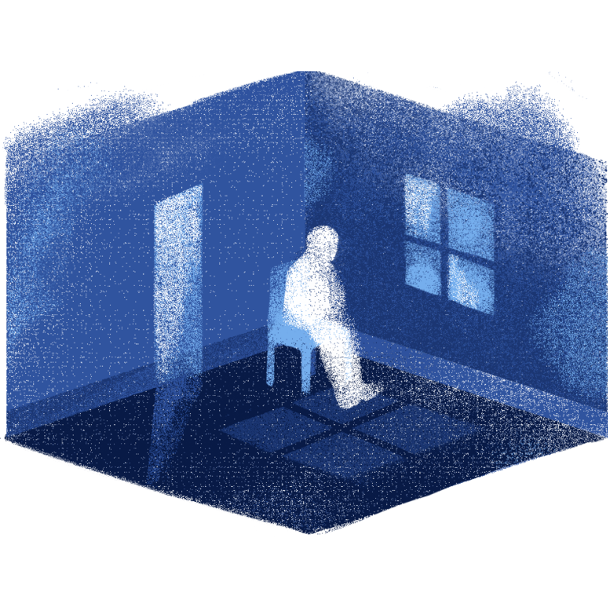

OVERTHINKING
"I feel like I just embarrassed myself." "Oh no, I feel like I just made a fool out of myself." "Maybe he actually likes me." "She's not replying. Is she mad? Did I make her mad?" "Why does he feel so distant? Is he trying to stay away from me?" "Maybe he doesn't even care about me." "She might think I'm annoying her if I reach out to her." "I'm a bad friend, am I?"
All these thoughts circulating a person's head, isn't it exhausting? Opening up about it is even more difficult, as these thoughts may range from subtle observations to illusions far from reality. It is only natural to be sensitive to change, but it is how we react that defines who we are.
But what happens when these thoughts start to become the "illusion" that you perceive as "reality"? Clouding up your mind and forming false thoughts would only influence your behavior and emotions negatively. It's difficult to think about what would satisfy you and others, which is why for some people, overthinking tends to be their way of making sure everything turns out perfect.
Overthinking, The Bitter Reality
A noisy mind tends to stem from uncertainty and anxiety. The constant worrying and ruminating that seems to never lead to a solution ends up messing up your thoughts. When you know you are in control of all the things in your life, such as your relationship, social life, academics, and livelihood, you feel peace, knowing that nothing could ever ruin your day. You think you've done your best to keep them in the bay, and you've done a good job.
But once something falls into conflict, such as a sudden change in your relationship, you tend to find a solution for the problem. The problem begins when your thought process becomes so unproductive that you start to think about it over and over again without coming up with an improvement.
Overthinking can become unhelpful when it starts to affect how you live your life. It can paint illusions that are far from reality, which ends up being another problem you have to deal with. It's never wrong to think about a solution for a problem; what is wrong is when overthinking becomes the source of your struggle with anxiety and depression.
Overthinking relate to:
- Unproductive worrying of the past
- Embarrasing and self-doubt thoughts
- Struggle in self-identity
- Unsure with your current life choices
- Questioning your own personality
- Uncertainty about something that hasn't happened yet
- Inability to see a stable or successful future
A Break for a Mind's Quick Breath
It is important to find ways to relax. Do your usual hobbies or discover a way to release your thoughts, such as gathering new perspectives. Take some time to pause and breathe and gather your thoughts properly. Try to be aware of when you start to overthink; just be careful and try to avoid overthinking that you are overthinking.
Additionally, stay in touch with the present, ground yourself, and don't get too fixated on your flaws and mistakes. Know that overthinking the past won't do any good for your present and future. Regardless, your worries shouldn't have a place in your mind if they only exist to blind you from living in the real world.

Take some time to relax and breathe.
Look at a bigger picture, gain new perspectives.
Step back and remember to be compassionate to yourself.